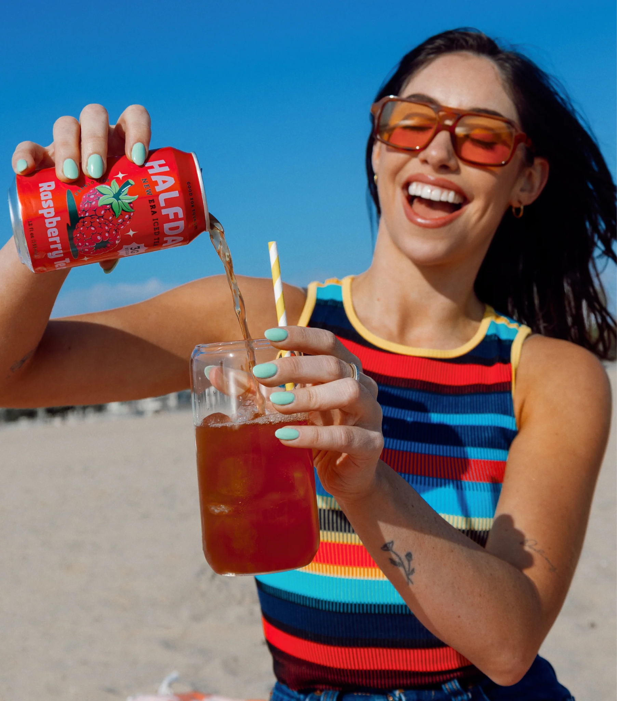
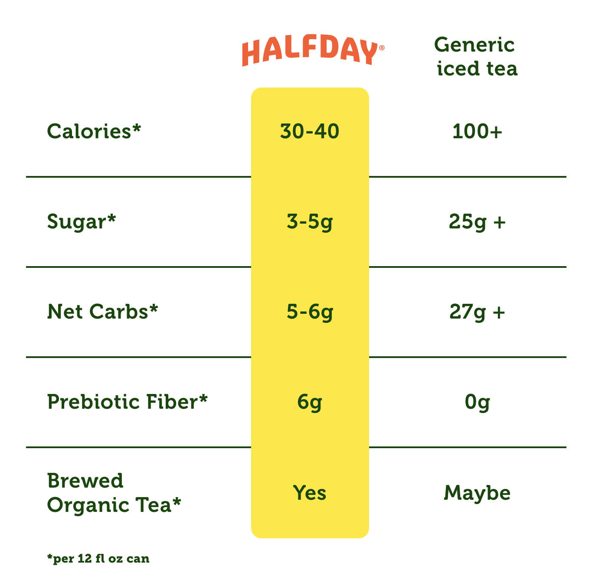
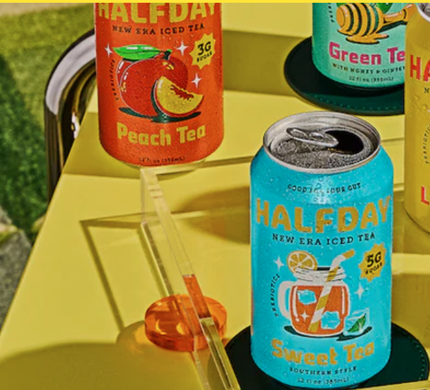
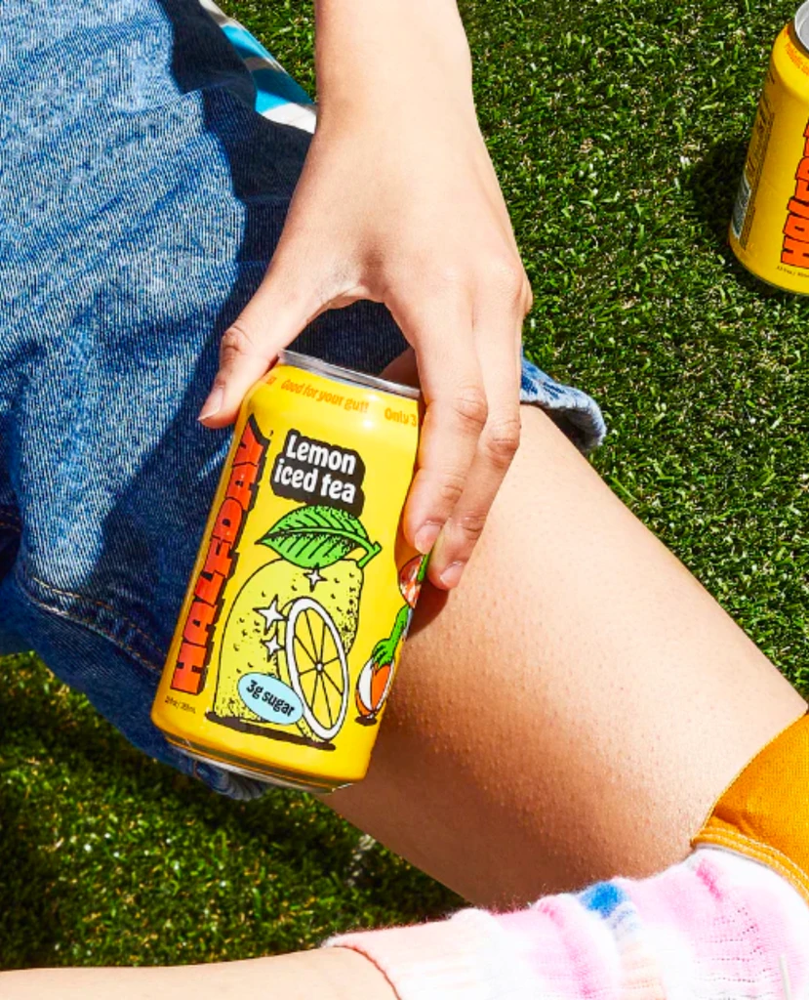
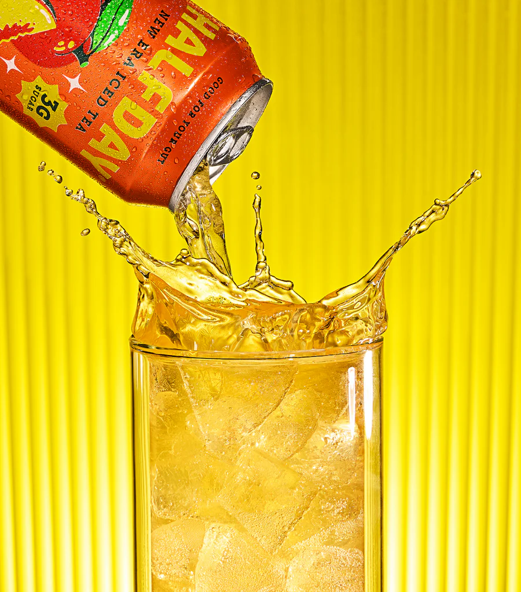

01 / My Work: Case Study
A full marketing plan for Halfday, a prebiotic iced tea brand, built from the ground up: customer segmentation, competitive positioning, pricing math, and a twelve month promotional roadmap.
02 / Overview
For our group marketing plan, my team and I built a complete go-to-market strategy for Halfday, a prebiotic iced tea positioned against gut-health beverages like OLIPOP and Poppi. Rather than treating the assignment as a single pitch deck, we worked through it the way a real launch team would: who the customer actually is, why they would choose Halfday over what is already on the shelf, what a can should cost, and how a twelve month calendar of promotion turns awareness into repeat purchase.
I led the customer segmentation and competitive analysis work and contributed to the pricing model and promotional calculations below.
03 / The Brand
Halfday is a new era iced tea built around three differentiators: it is brewed with prebiotic fiber for gut health, it carries a fraction of the sugar and calories of a typical bottled iced tea, and it is made with organic tea rather than concentrate. The brand identity leans bright, playful, and beach-ready, aimed at a younger, health-conscious consumer who still wants a drink that tastes like a treat.

Halfday's brand photography leans warm, playful, and outdoor: sunny locations, bright cans, and real hands holding the product.
04 / Customer Analysis
We defined the target customer across four lenses so the rest of the plan, positioning, pricing, and promotion, could be built around a real person rather than a generic "health-conscious shopper."
05 / Competitive Positioning
We ran a Porter's five forces style analysis against the closest competitors, OLIPOP and Poppi. The threat of substitutes is low since few products combine prebiotic function with iced tea specifically, buyer power is high given how crowded the functional beverage aisle already is, and supplier power is low thanks to widely available tea and prebiotic fiber inputs. That combination told us Halfday's opening had to be earned through differentiation, not price alone.
For health-conscious consumers who want a great-tasting iced tea without the guilt, Halfday is the prebiotic iced tea that delivers gut health benefits and bold flavor with a fraction of the sugar of traditional iced teas.
That single positioning statement anchored every downstream decision in the plan, from which three product attributes we chose to lead with to which channels made the promotional cut.
06 / Product
We narrowed Halfday's story down to three attributes worth building a whole campaign around, rather than trying to sell every feature at once.
6g of prebiotic fiber per can supports gut health, a benefit almost no direct iced tea competitor offers.
3 to 5g of sugar and 30 to 40 calories per can, brewed from organic tea rather than concentrate or artificial flavoring.
A flavor lineup (raspberry, peach, lemon, green tea, sweet tea) built to taste like an indulgence, not a health product.

The nutrition comparison we used to make the "low sugar, real ingredients" claim concrete against a generic bottled iced tea.
07 / Pricing
We built the price using a reference value and feature value-add method: starting from a true economic value (TEV) of $3.75 per can, then working down to a perceived economic value (PEV) of $2.50, a price a first-time buyer would find easy to justify next to an established competitor.
Against $370,000 in fixed costs, that breakeven volume made a penetration pricing strategy the clear choice: price low enough to win trial in a crowded aisle, then let repeat purchase and the loyalty program (below) carry margin over time.
08 / Promotion
We phased the launch year so each stage built on the awareness the last one created, rather than running every channel at once.
We modeled return on investment for three of those channels to see which deserved the largest share of the promotional budget:
Digital and social spend outperformed everything else on paper, but we kept sampling in the plan anyway. Its ROI is negative on a pure cost basis, but trial is what a brand new product needs most, and a can in someone's hand does work an ad cannot.
09 / Place
10 / Brand Snapshot
A few of the product and lifestyle visuals we pulled together for the plan, used to ground the positioning statement in what the product actually looks and feels like on shelf and in hand.



11 / Conclusion